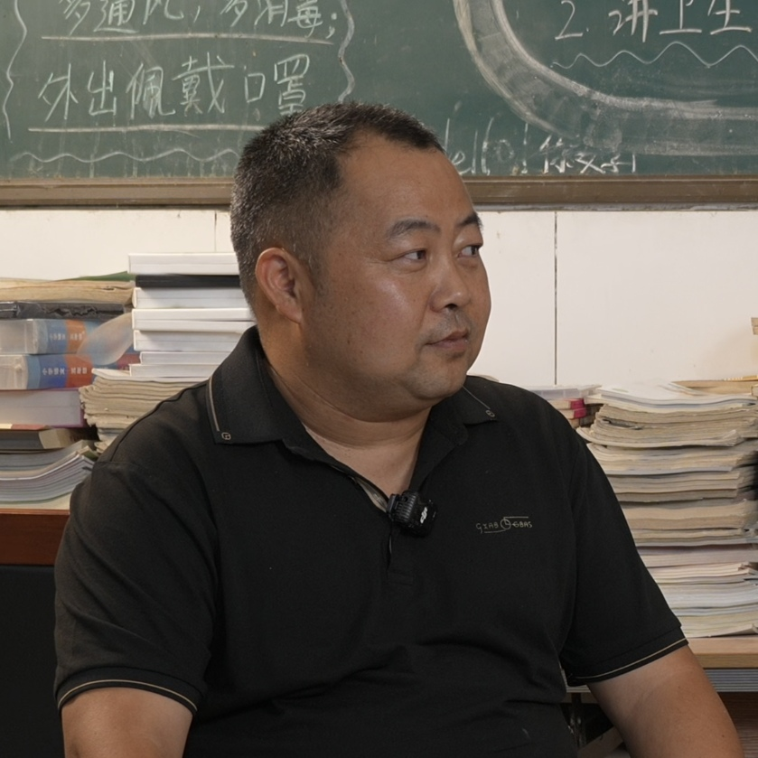
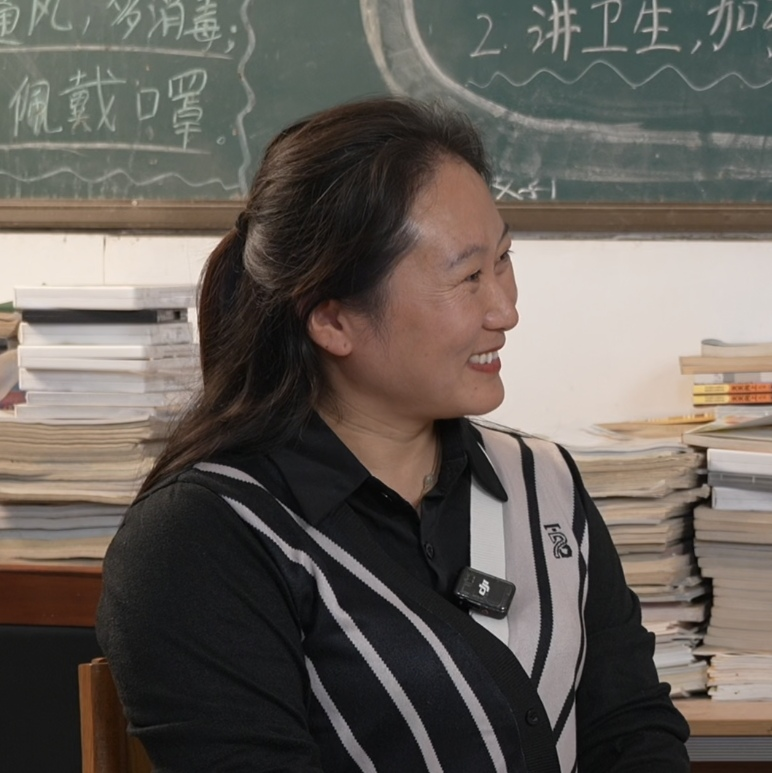
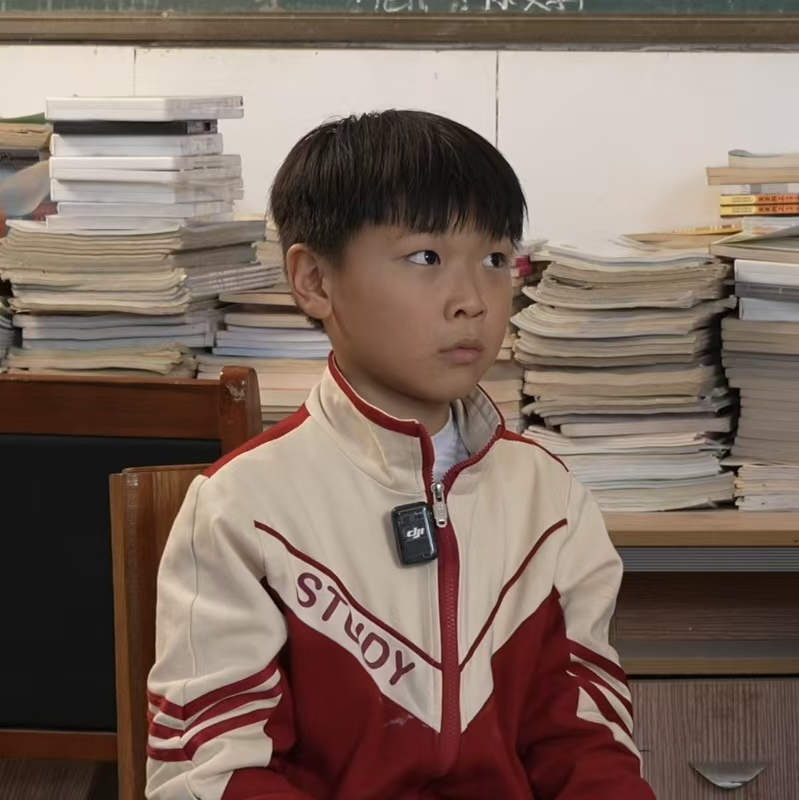
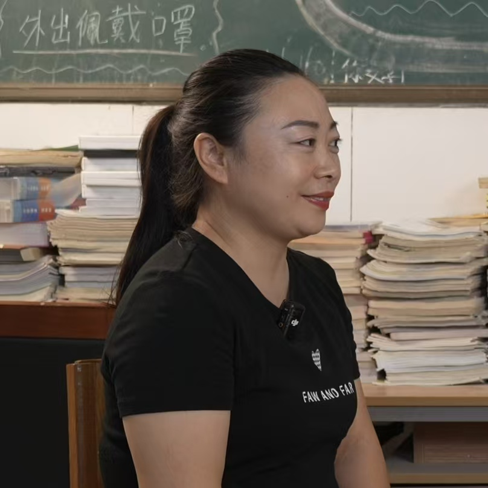
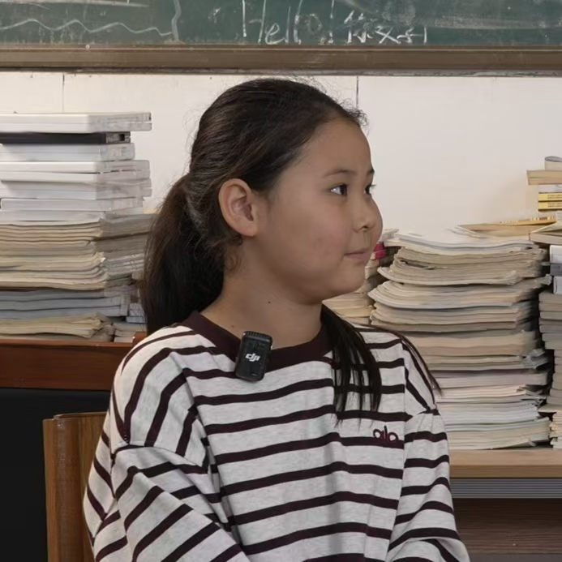
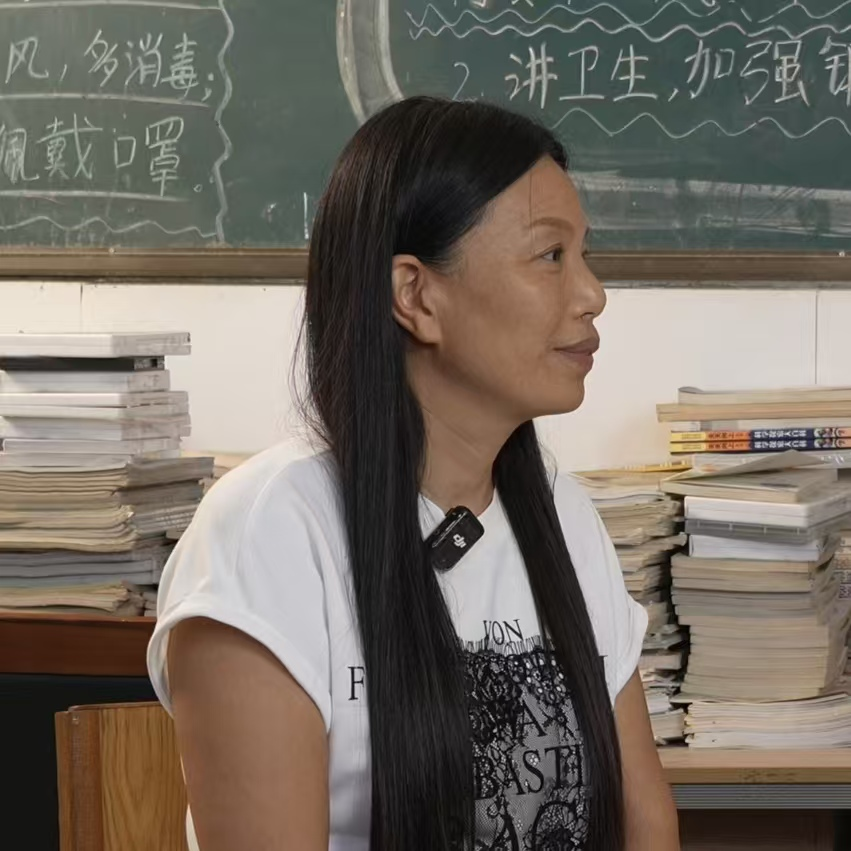
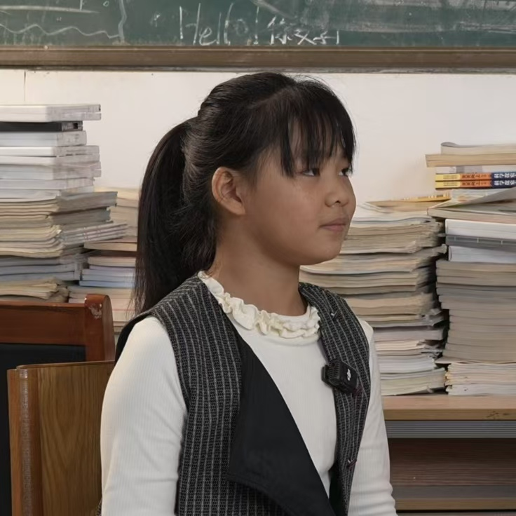

可是还有书籍
乡村阅读推广团队……
928
粉丝
5
关注
1007
点赞
采访故事

一位乡村校长，一所乡村学校。
他守着乡村教育的根,让60多名孩子在家门口上学、识字明事理;
他克服图书资源不足的困难，努力为孩子打开阅读之窗。
走进他的故事，听听他的教育坚守，看看他如何为乡村孩子铺就通往更广阔世界的路。
采访视频
0:00 / 0:00

在图书室的一角，有这样一位小女孩。
她书籍里认识小鲤鱼的勇敢，向大家分享阅读的快乐。
阅读的种子，正在这条“小鲤鱼”的心里慢慢生根发芽~
采访视频
0:00 / 0:00

在乡村学校坚守21年,只因这是她的家,只因她爱这里的孩子。
阅读是乡村孩子看世界的路，而她，是孩子们在这条路上的引路人。
让我们一起听听她不愿走、不能走的故事。
采访视频
0:00 / 0:00

在堆满书籍的教室里，一段关于《神笔马良》的对话温暖了时光。
他说，若有马良神笔，要画豪宅、豪车给爸妈，因为“他们养我不容易”，
要好好赚钱孝顺父母。童言质朴，却满是对父母的感恩与担当，
这份纯真的孝心，才是最可贵之处。
采访视频
0:00 / 0:00

因为深知农村孩子对知识的渴望与需要，她选择用热爱与奉献，
为他们点亮阅读的灯、铺就成长的路。
从引导内向女孩在文字里找到自信，到思考数字化阅读时代的教育引导，
她用行动诠释着：教育是陪伴，是引导，
更是让每个乡村孩子都能在书香与时代浪潮中，找到属于自己的方向。
采访视频
0:00 / 0:00

在小小的学校里，有个女孩在书本里编织着当医生的梦想。
她爱听《西游记》有声书，明白读书是逐梦的阶梯。
乡村孩子的世界里，阅读不分形式，
一次与文字的邂逅，都是向梦想靠近的脚步。
采访视频
0:00 / 0:00

在乡村讲台坚守26年的她,带着对农村土地的热爱与对教育的执着,
用一本本贴近生活的书籍、一次次暖心的家访，为乡村孩子搭建起阅读的桥梁。
她引导孩子从书中汲取知识，开阔眼界，更用小奖励点燃他们的阅读热情。
在她看来，阅读是乡村孩子走出乡村的翅膀，而她愿意做那个助他们展翅的人。
采访视频
0:00 / 0:00

小朋友对阅读的热爱总是纯粹而热烈。
她沉浸在《小熊安妮普》的世界里，甚至忘记了上课铃响。
对她而言，读书是知道好多好玩事儿的途径，是能把精彩故事分享给小伙伴的快乐，
更是是在梦想图书馆里装满动物百科与画画书的期待。
在她的阅读世界里，对书的期待很简单，却满是对知识的向往。
采访视频
0:00 / 0:00